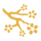

my jsme viet village
prémiová vietnamská restaurace
o nás
restaurace nejen o jídle
Vietnamská kuchyně patří mezi nejoblíbenější na světě díky jedinečným chutím a důrazu na čerstvost. Kombinuje bylinky jako koriandr, mátu či citronovou trávu s rýží, zeleninou a rybami pro zdravé a vyvážené pokrmy.
Vietnamské restaurace jsou oblíbenou destinací pro milovníky této kuchyně, kde mohou ochutnat autentická jídla jako pho, bun cha, nem, banh mi a mnoho dalších specialit.
-tým viet village

čerstvé suroviny
,,Používáme jen ty nejčerstvější suroviny, co příroda nabízí.”

nezapomenutelný zážítek
„Skvělá chuť a atmosféra, na kterou nezapomenete.“
chuťové dobrodružství
„Ochutnejte nové kombinace, které vás nadchnou.“
pohostinnost s úsměvem
„Přívětivý servis, díky kterému se budete cítit jako doma.“
autentické recepty
„Vaříme přesně tak, jak se to dělá doma ve Vietnamu.“
RECENZE
co o nás říkají naši zákazníci
kontakt
vaše místo u nás čeká